library(ggplot2) # 여기서 필요한 패키지 부르기7 탐색적 데이터 분석
탐색적 데이터 분석은 데이터를 요약하고 시각적 표현을 통해서 알아가는 방법입니다. 탐색적 분석의 중요한 부분이 안-지도적 학습인데 unsupervised learning, 이것은 의미있는 하위집단 분류와 패턴을 찾는 여러 방법의 집합체를 통칭합니다. 통계적 추론,즉 가설을 검증하는 접근법과 달리, 이것은 가설을 만들어내는 과정입니다. 물론 이 가설도 나중에 새 데이터에 의해서 검증을 받아야합니다. 탐색적 분석의 또다른 목적은 극단적 사례와 부정확한 자료를 찾아내어 좀더 효율적인 데이터셋을 구축하는 겁니다. 데이터의 통계적 요약과 그래프 작성을 통해서 탐색적 분석을 해봅니다. (탐색적 분석은 기계학습의 unsupervised learning 과 연관이 있습니다.)
7.1 ggplot2 그래프를 보기 좋게
ggplot2 를 수준 높게 이용해서 그래프를 보기 좋게 그립니다.
7.1.1 테마 이용
예전에 3 장의 숫자형 자료의 그래프에서 그렸던 그래프를 다시 봅니다. 그 아래에 테마를 붙여 그래프를 발전시킵니다. 아래 일곱 개는 각각 그래프를 그립니다. 아래를 복사해서 실행해 보세요. R 스크립트 파일을 만들어 사용하거나 Quarto 파일을 만들어 코드 청크에 넣고 사용하세요.
만일 경고메시지가 나타나고 그걸 없애고 싶으면 청크옵션에 #| warning: false를 넣습니다.
p <- ggplot(msleep, aes(brainwt, sleep_total, colour = vore)) +
geom_point() +
xlab("Brain weight (logarithmic scale)") +
ylab("Total sleep time") +
scale_x_log10() +
facet_wrap(~ vore)
# 다양한 테마로 그래프를 그린다
p + theme_grey() # The default theme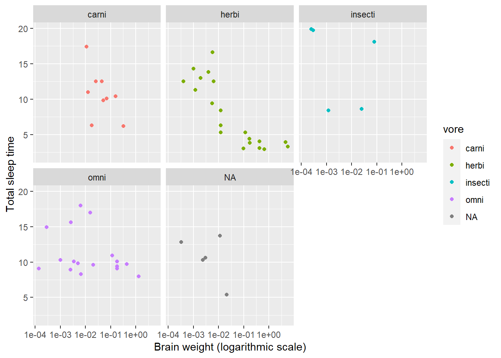
p + theme_bw()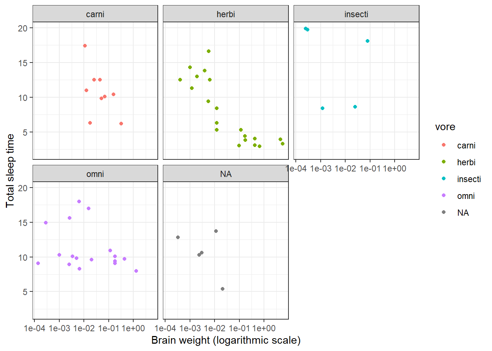
p + theme_linedraw()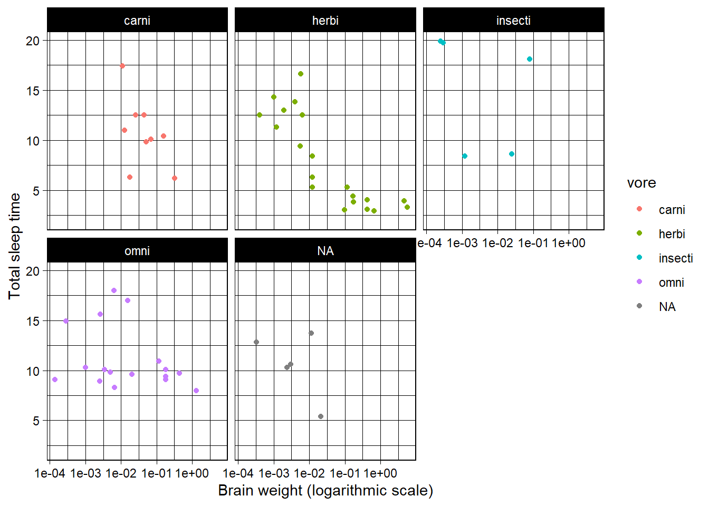
p + theme_light()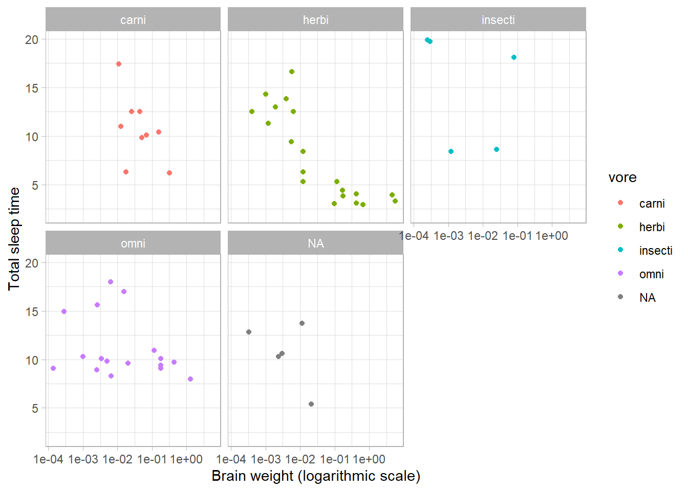
p + theme_dark()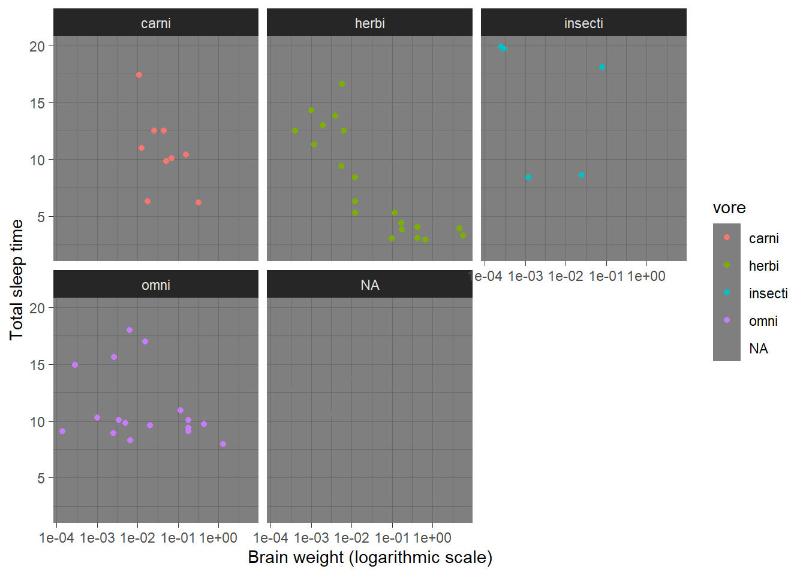
p + theme_minimal()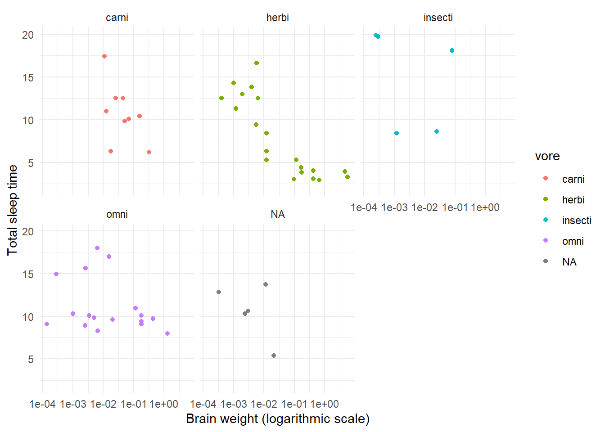
p + theme_classic()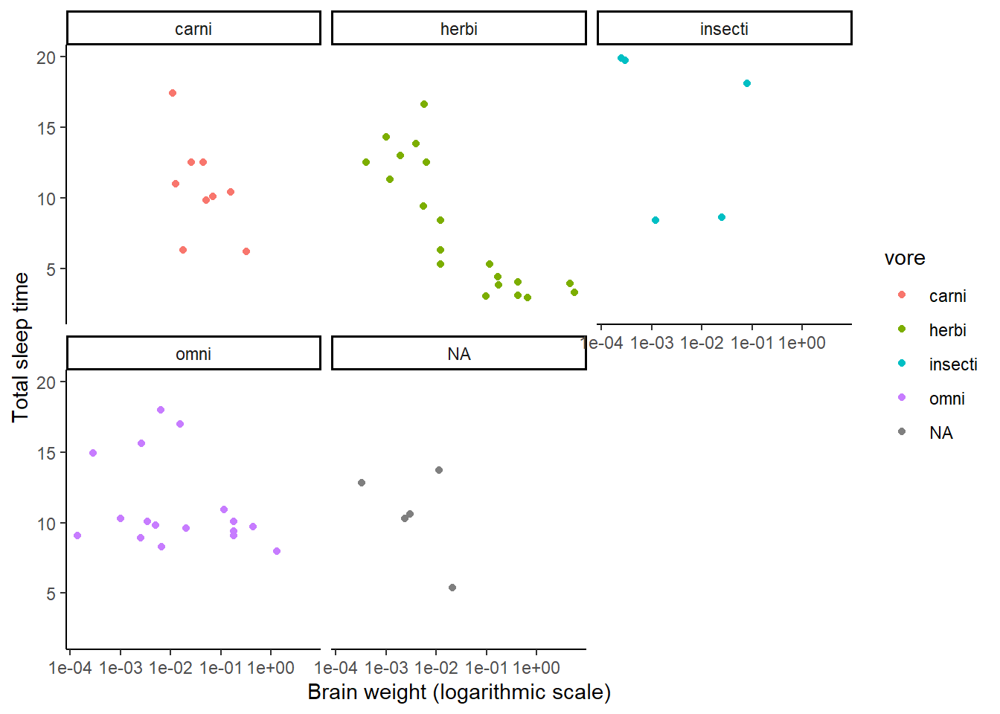
7.1.2 칼라 팔레트
배경색 같은 것과는 달리, 칼라 팔페트는 테마의 부분이 아닙니다. 팔레트는 그래프에서 점을 그릴 때 사용하는 일련의 색깔을 말합니다. 팔레트를 사용한 그래프는 색깔을 통해서 직관적으로 이해하기 좋습니다.
scale_colour_brewer 을 이용해서 칼라 팔레트를 바꿉니다. 세 종류의 팔레트가 있습니다.
- Sequential palettes: 한 색깔에서 하얀 색으로 점점 바뀝니다. 순위척도 변수나 등간 및 비율 척도 변수에 사용하면 좋습니다.
- Diverging palettes:한 색깔에서 다른 색까로 점점 바뀌는데 중간에 하얀 색을 거칩니다. 변수값 중간에 의미 있는 0을 가진 변수에 좋습니다.
- Qualitative palettes: 다양한 색으로 된 팔레트인데, 명목척도의 변수에 좋습니다.
?scale_colour_brewer를 이용하거나 http://www.colorbrewer2.org를 방문해서 팔레트의 목록을 알 수 있습니다. 아래 밑 부분에 예를 세 개 들었습니다. 그래프에 사용한 변수 vore 는 명목척도변수이므로 qualitative 팔레트가 가장 어울린다고 봅니다. 한 번 시행해 보세요.
p <- ggplot(msleep, aes(brainwt, sleep_total, colour = vore)) +
geom_point() +
xlab("Brain weight (logarithmic scale)") +
ylab("Total sleep time") +
scale_x_log10()
# Sequential palette:
p + scale_colour_brewer(palette = "OrRd")
# Diverging palette:
# p + scale_colour_brewer(palette = "RdBu")
# Qualitative palette:
p + scale_colour_brewer(palette = "Set1")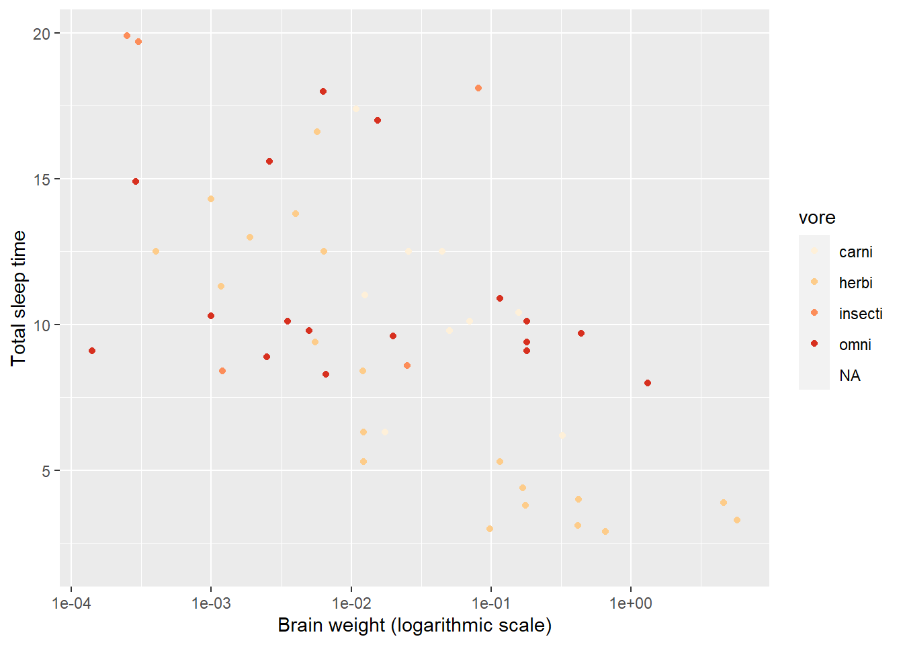
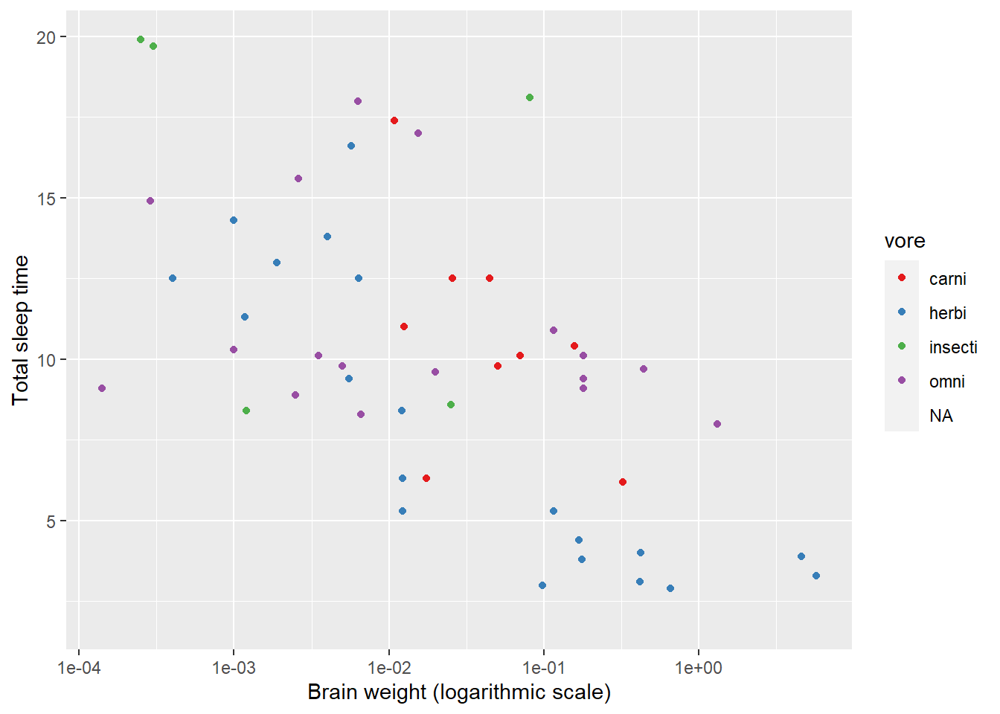
7.2 테마 맞춤
테마는 색깔과 글자 등 여러 요소를 잘 어울리게 미리 선택한 것입니다. 따라서 theme을 사용하면 시간과 노력을 절약합니다. 하지만 원한다면 테마의 요소를 입맛에 맞게 변경할 수 있습니다. 테마는 미학적 aes 요소에 관련이 없는 모든 시각적 요소를 통제합니다. 위 청크에서 생성한 객체(그래프) p를 사용합니다.
# 범례가 없으려면 "none"
# 범례가 그림 아래에 있다:
p + theme(legend.position = "bottom")
# 범례가 플롯 안에 있다:
p + theme(legend.position = c(0.9, 0.7))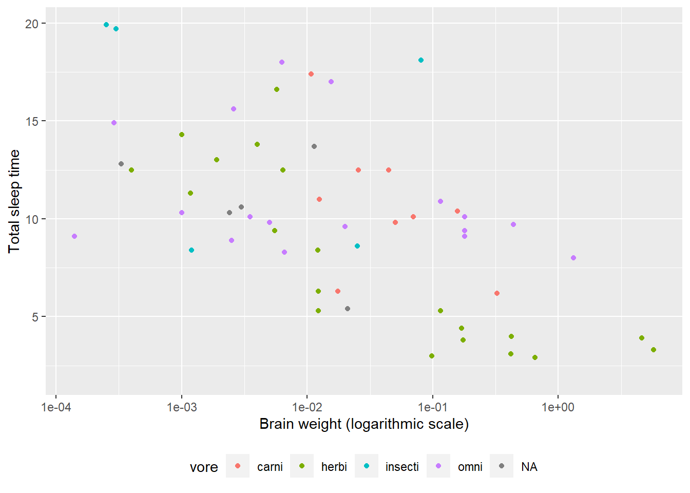
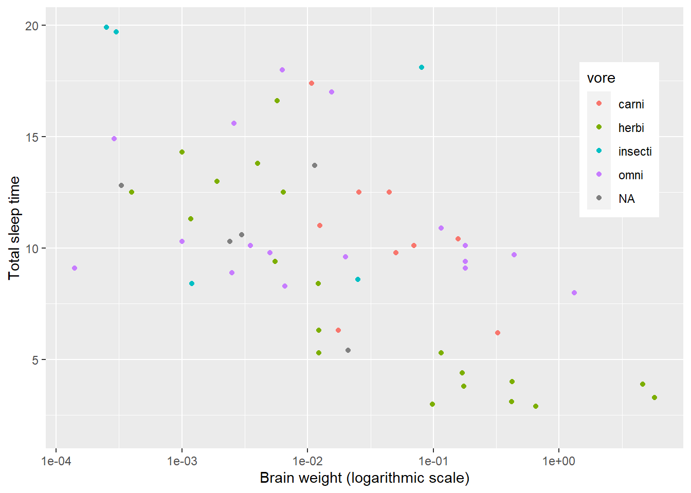
마지막 예의 벡터 c(0.9, 0.7)는 범례의 상대적 위치를 말합니다. c(0, 0)은 그래프의 왼쪽 아래 모서리의 위치고 c(1, 1)은 그래프의 오른쪽 위 모서리의 위치를 의미합니다. 따라서 상대적 위치는 0에서 1 사이 값을 선택하면 됩니다.
아래의 예를 보고 theme 을 사용해 봅시다.
p + theme(panel.grid.major = element_line(colour = "black"),
panel.grid.minor = element_line(colour = "purple",
linetype = "dotted"),
panel.background = element_rect(colour = "red", size = 2),
plot.background = element_rect(fill = "yellow"),
axis.text = element_text(family = "mono", colour = "blue"),
axis.title = element_text(family = "serif", size = 14))테마의 조건을 알려면 ?theme 을 이용하거나, ?element_line (줄), ?element_rect (경계선과 배경), ?element_text (글자), 그리고 element_blank (그래프 요소의 제외) 등을 사용한다. colors() 를 이용해서 이미 있는 색깔 이름을 사용하거나 색깔의 헥사코드를 사용합니다.
7.3 극단값과 결측값
여기서는 ggplot2 에 있는 diamonds 데이터셋을 이용합니다.
7.3.1 극단값 탐지
박스 그래프나 산포도 그래프는 뭔가 수상한 사례값을 찾아내는 데 도움을 줍니다. 극단값은 측정 실수나 타이핑 실수일 수 있지만,독특한 예외 사례일 수도 있습니다. 예외 사례는 가끔 중요한 정보나 통찰을 제공하기도 해서 주의깊게 살펴보는 게 좋습니다.
다이아몬드 캐럿과 가격의 산포도를 봅시다.
ggplot(diamonds, aes(carat, price)) +
geom_point()극단값이 여럿 있지요? 예를 들어, 드문 사례인 5캐럿이지만 값이 비슷한 사례가 하나 있습니다. 3캐럿인데 여러 개 싼 것도 있고요. 이런 걸 어떻게 특정할 수 있을까요?
상호작용적 그래프를 출력하는 plotly 패키지가 한 방법이 될 수 있습니다.
install.packages("plotly")ggplot2 에서 plotly 를 사용하려면 그래프를 변수에 저장하고 ggplotly 함수를 활용해 이용합니다. 결과를 불러오는 데 시간이 좀 걸리지만 상호작용적 그래프니까 그럴 가치가 있지요.
myPlot <- ggplot(diamonds, aes(carat, price)) +
geom_point()
library(plotly)
ggplotly(myPlot)plotly의 디폴트는 단지 캐럿과 가격만 보여주는 거지만 문자로 정보를 주도록 할 수도 있습니다.
myPlot <- ggplot(diamonds, aes(carat, price, text = paste("Row:",
rownames(diamonds)))) +
geom_point()
ggplotly(myPlot)자, 상호작용적 그래프를 활용해서 조사해 봅시다.
7.3.2 극단값에 라벨 붙이기
상호작용적 그래프에서 극단값 정보를 얻지만 다른 그래프나 인쇄물일 때는 그렇지 못합니다. 이때 geom_text 가 대안이 될 수 있어요. 예를 들어, 극단값을 가진 사례의 번호를, 즉 행 row 번호를 점에 넣을 수 있습니다. geom_text 를 사용하면서 조건을 붙이면 됩니다. 코드는 ifelse() 입니다.
## 사레(행) 번호를 알 때 (5캐럿 사례는 27,416행에 있다)
ggplot(diamonds, aes(carat, price)) +
geom_point() +
geom_text(aes(label = ifelse(rownames(diamonds) == 27416,
rownames(diamonds), "")),
hjust = 1.1)
## (hjust=1.1 글자가 점의 왼쪽에 위치하도록 한다)
## 4 캐럿 이상의 사례는 점에 글자를 붙인다
ggplot(diamonds, aes(carat, price)) +
geom_point() +
geom_text(aes(label = ifelse(carat > 4, rownames(diamonds), "")),
hjust = 1.1)
## 3 캐럿이면서 값이 7500 이하인 점에 글자를 붙인다
ggplot(diamonds, aes(carat, price)) +
geom_point() +
geom_text(aes(label = ifelse(carat == 3 & price < 7500,
rownames(diamonds), "")),
hjust = 1.1)7.4 산포도 그래프의 추세
동물의 뇌 크기와 잠 시간의 관계를 봅시다.
ggplot(msleep, aes(brainwt, sleep_total)) +
geom_point() +
xlab("Brain weight (logarithmic scale)") +
ylab("Total sleep time") +
scale_x_log10()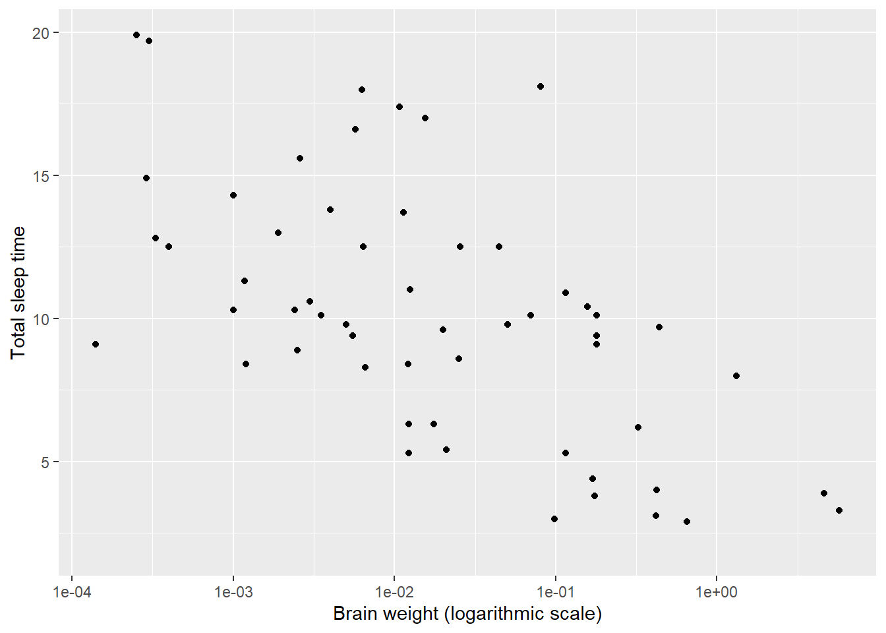
점들이 내리막인 경향이 있지요? 더 확실히 확인하려면 geom_smooth 를 이용해 부드러운 선을 긋습니다.
ggplot(msleep, aes(brainwt, sleep_total)) +
geom_point() +
geom_smooth() +
xlab("Brain weight (logarithmic scale)") +
ylab("Total sleep time") +
scale_x_log10()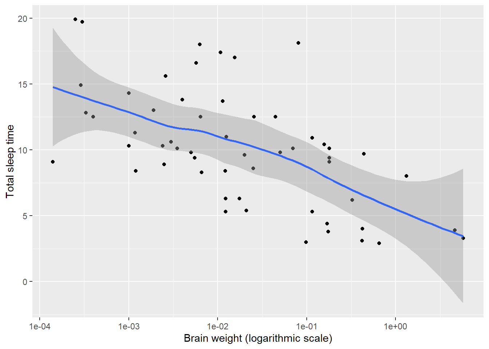
선이 예측값이고 검은 부분이 예측값의 신뢰구간입니다. 통상 geom_smooth는 95% 신뢰구간을 사용합니다.
7.5 애니메이션
R의 놀라운 기능 중 하나는 애니메이션 플롯을 만드는 겁니다. 이건 먼저 plotly 패키지를 설치해야 합니다.
“숫자로 말하라”는 말이 있습니다. 그만큼 숫자, 즉 통계는 사람을 설득하는 힘이 있습니다. 거기에 애니메이션을 더하면 설득의 힘이 아주 강하겠지요.
# install.packages(plotly)
library(ggplot2)
library(plotly)
df <- data.frame(
x = c(1,2,3,4,5),
y = c(1,2,3,4,5),
f = c(1,2,3,4,5)
)
p1 <- ggplot(df, aes(x, y)) +
geom_point(aes(frame=f))
ggplotly(p1)
df <- data.frame(
x = c(1,2,3,4, 4),
y = c(1,2,2,3, 4),
f = c(1,2,3,4,5)
)
p2 <- ggplot(df, aes(x, y)) +
geom_point(aes(frame=f))
ggplotly(p2)library(plotly)
library(ggplot2)
# install.packages(gapminder)
library(gapminder) # 데이터 패키지
head(gapminder)
tail(gapminder)
p3 <- ggplot(gapminder, aes(gdpPercap, lifeExp, color = continent)) +
geom_point(aes(size = pop, frame = year, ids = country)) +
scale_x_log10()
ggplotly(p3)방금 본 것처럼, 의외로 위의 코드가 어렵지 않습니다. 애니메이션 플롯은 적절한 데이터를 구하는 게 어렵지 코딩하는 건 오히려 간단합니다. 위의 예가 나온 Plotly ggplot2 Open Source Graphing Library 를 방문해 보세요. 애니메이션 플롯은 맨 아래에 있으니 클릭하면 애니메니션 페이지로 갑니다.